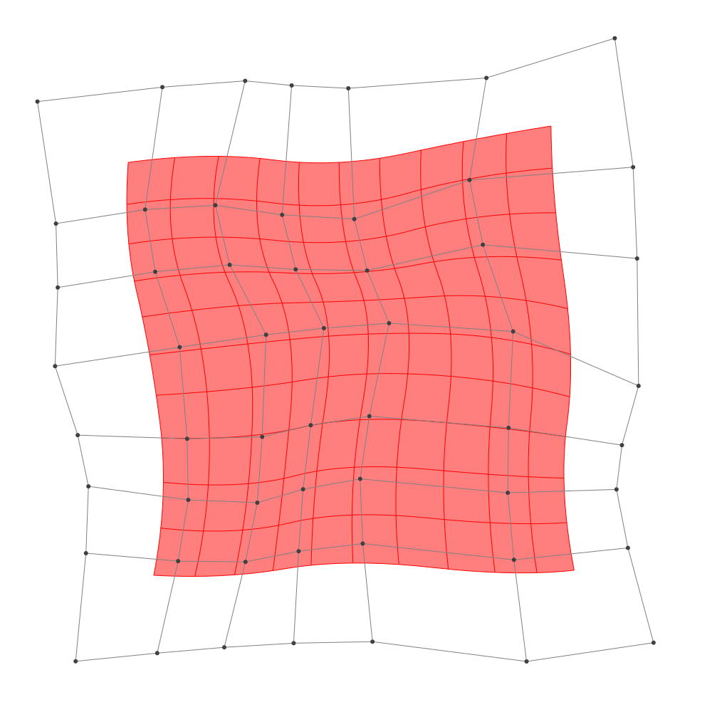
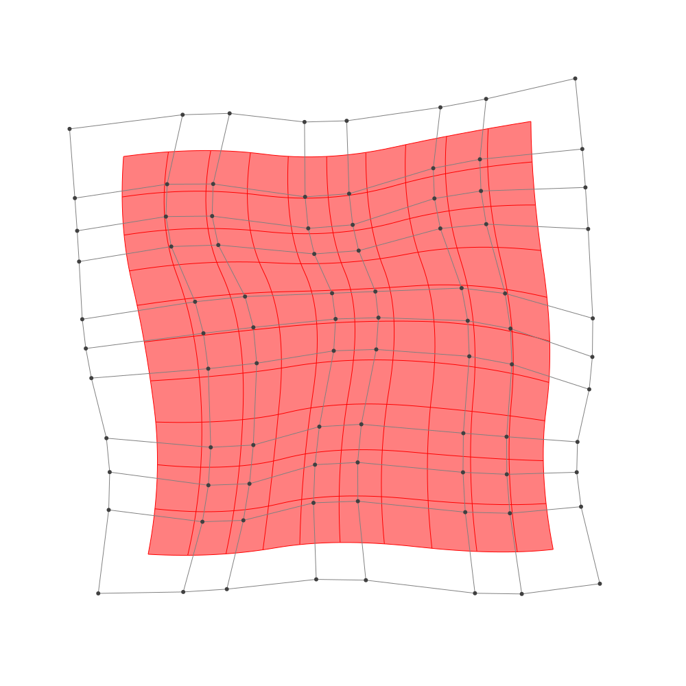

Refinement
BasicBSpline.refinement — FunctionRefinement of B-spline manifold with given B-spline spaces.
julia> p = 2 # degree of polynomial2julia> k = KnotVector(1:8) # knot vectorKnotVector([1, 2, 3, 4, 5, 6, 7, 8])julia> P = BSplineSpace{p}(k) # B-spline spaceBSplineSpace{2, Int64}(KnotVector([1, 2, 3, 4, 5, 6, 7, 8]))julia> rand_a = [SVector(rand(), rand()) for i in 1:dim(P), j in 1:dim(P)]5×5 Matrix{StaticArrays.SVector{2, Float64}}: [0.562306, 0.212372] [0.803849, 0.742327] … [0.0257007, 0.0733193] [0.325139, 0.388816] [0.948028, 0.338663] [0.725295, 0.38552] [0.490755, 0.518553] [0.270266, 0.805507] [0.176976, 0.243491] [0.895578, 0.210033] [0.599362, 0.588526] [0.331098, 0.40546] [0.678967, 0.473387] [0.0795776, 0.69259] [0.13431, 0.962679]julia> a = [SVector(2*i-6.5, 2*j-6.5) for i in 1:dim(P), j in 1:dim(P)] + rand_a # random5×5 Matrix{StaticArrays.SVector{2, Float64}}: [-3.93769, -4.28763] [-3.69615, -1.75767] … [-4.4743, 3.57332] [-2.17486, -4.11118] [-1.55197, -2.16134] [-1.77471, 3.88552] [-0.00924543, -3.98145] [-0.229734, -1.69449] [-0.323024, 3.74349] [2.39558, -4.28997] [2.09936, -1.91147] [1.8311, 3.90546] [4.17897, -4.02661] [3.57958, -1.80741] [3.63431, 4.46268]julia> M = BSplineManifold(a,(P,P)) # Define B-spline manifoldBSplineManifold{2, (2, 2), StaticArrays.SVector{2, Float64}, Tuple{BSplineSpace{2, Int64}, BSplineSpace{2, Int64}}}((BSplineSpace{2, Int64}(KnotVector([1, 2, 3, 4, 5, 6, 7, 8])), BSplineSpace{2, Int64}(KnotVector([1, 2, 3, 4, 5, 6, 7, 8]))), StaticArrays.SVector{2, Float64}[[-3.937693813522018, -4.287627898434655] [-3.696150637384935, -1.7576734655984012] … [-4.168458503314693, 1.5572241391197228] [-4.474299256240964, 3.5733192823346562]; [-2.1748605644205736, -4.111183954085436] [-1.5519722616383507, -2.161337182426112] … [-2.3786216663333897, 1.858581567735454] [-1.774705272123341, 3.885520426821427]; … ; [2.395578021184781, -4.2899667725856885] [2.0993622697150713, -1.9114740379833433] … [1.5528324114790646, 2.2186976543756898] [1.8310976327656951, 3.905460039379429]; [4.17896665146967, -4.026612794510106] [3.579577607810454, -1.8074104564881064] … [3.9372714065213428, 2.332610030095873] [3.6343098801123737, 4.462678988078092]])
h-refinemnet
Insert additional knots to knot vector.
julia> k₊=(KnotVector(3.3,4.2),KnotVector(3.8,3.2,5.3)) # additional knotvectors(KnotVector([3.3, 4.2]), KnotVector([3.2, 3.8, 5.3]))julia> M_h = refinement(M,k₊=k₊) # refinement of B-spline manifoldBSplineManifold{2, (2, 2), StaticArrays.SVector{2, Float64}, Tuple{BSplineSpace{2, Float64}, BSplineSpace{2, Float64}}}((BSplineSpace{2, Float64}(KnotVector([1.0, 2.0, 3.0, 3.3, 4.0, 4.2, 5.0, 6.0, 7.0, 8.0])), BSplineSpace{2, Float64}(KnotVector([1.0, 2.0, 3.0, 3.2, 3.8, 4.0, 5.0, 5.3, 6.0, 7.0, 8.0]))), StaticArrays.SVector{2, Float64}[[-3.937693813522018, -4.287627898434655] [-3.7927679078397682, -2.769655238732903] … [-4.214334616253634, 1.8596384106019626] [-4.474299256240964, 3.5733192823346562]; [-2.791852201606079, -4.172939334607663] [-2.4982016965322247, -2.8812086627649127] … [-2.9622393503699955, 2.0565780014996142] [-2.7195631665645092, 3.7762500262510574]; … ; [2.395578021184781, -4.2899667725856885] [2.217848570302955, -2.8628711318242814] … [1.5945721946720592, 2.4717120121262504] [1.8310976327656951, 3.905460039379429]; [4.17896665146967, -4.026612794510106] [3.81933322527414, -2.6950913916969057] … [3.8918271775599975, 2.6521203737932058] [3.6343098801123737, 4.462678988078092]])julia> save_png("2dim_h-refinement.png", M_h) # save image

Note that this shape and the last shape are identical.
p-refinemnet
Increase the polynomial degree of B-spline manifold.
julia> p₊=(1,2) # additional degrees(1, 2)julia> M_p = refinement(M,p₊=p₊) # refinement of B-spline manifoldBSplineManifold{2, (3, 4), StaticArrays.SVector{2, Float64}, Tuple{BSplineSpace{3, Int64}, BSplineSpace{4, Int64}}}((BSplineSpace{3, Int64}(KnotVector([1, 2, 3, 3, 4, 4, 5, 5, 6, 6, 7, 8])), BSplineSpace{4, Int64}(KnotVector([1, 2, 3, 3, 3, 4, 4, 4, 5, 5, 5, 6, 6, 6, 7, 8]))), StaticArrays.SVector{2, Float64}[[-3.567613097693961, -3.6499031187164284] [-3.415062749071655, -2.433268207396378] … [-3.9087060042520303, 2.111925984520705] [-3.9858132851204724, 3.120877199117425]; [-2.328833410518807, -3.628958432679771] [-2.0491680196814563, -2.60569274175203] … [-2.563855255075108, 2.3146382229096987] [-2.337710153564777, 3.327204009463432]; … ; [2.606123301190274, -3.658088359113354] [2.432750984439625, -2.4821161915272087] … [1.9955874348204516, 2.677844753787425] [2.0862844831558007, 3.558168160704168]; [3.7445201726819493, -3.509067439826356] [3.4700900918681308, -2.386192071100327] … [3.488342306899371, 2.8276707664306273] [3.385297106002853, 3.8557630310068634]])julia> save_png("2dim_p-refinement.png", M_p) # save image

Note that this shape and the last shape are identical.